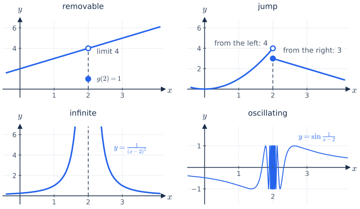
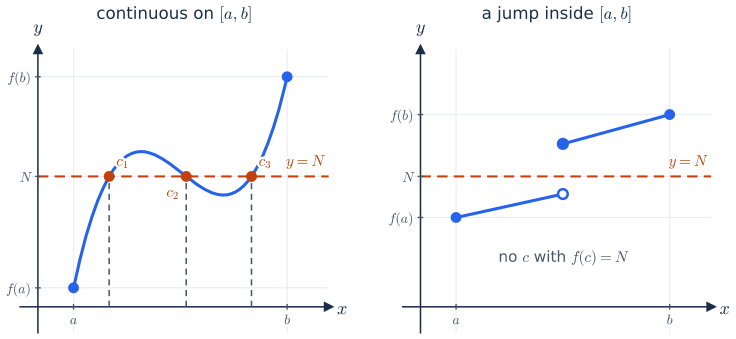
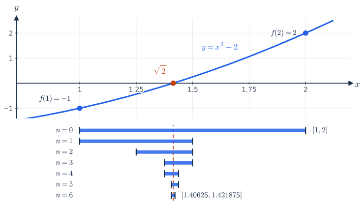
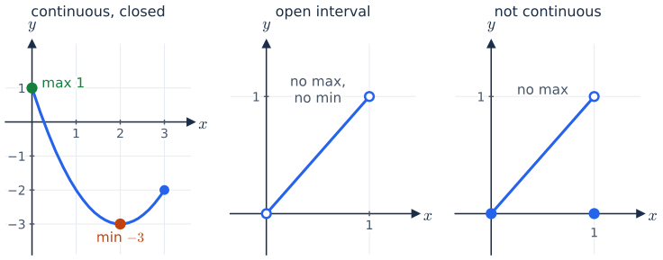
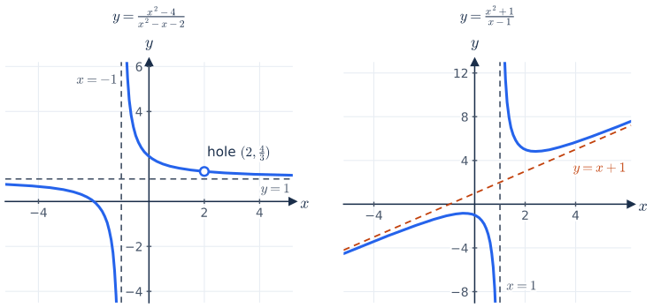

Calculus · Part I · Functions, limits and continuity
Module 3Continuity and infinity
Learn what it means for a function to be continuous, and what continuity guarantees: solutions of equations, which the bisection method finds to any accuracy you ask for, and largest and smallest values. Then follow functions out to infinity, through asymptotes and limits at infinity, to the orders of growth behind big-O notation.
⏱ 270 minYou need: Modules 1 and 2
In this module you will
Decide whether a function is continuous at a point, and classify its discontinuities
Explain why the standard functions are continuous on their domains, and use continuity to find limits
Use the Intermediate Value Theorem to show that an equation has a solution, and find it by bisection to a guaranteed accuracy
State the Extreme Value Theorem, and show with examples why each of its hypotheses is needed
Find infinite limits and limits at infinity, and the vertical, horizontal and oblique asymptotes of a graph
Compare the growth of logarithms, powers, exponentials and factorials, and use big-O notation
1
Continuity at a point
A cup of tea cooling from 80 °C to 60 °C passes through every temperature in between, because temperature changes gradually. A car park’s charge does not. Suppose (hypothetically) that a car park charges £3 for each hour or part of an hour: 59 minutes cost £3, 61 minutes cost £6, and no length of stay costs £4.50. The charge jumps.
Module 2 met three ways for a limit to fail to exist: a jump, a blow-up and an oscillation. This module asks the opposite question: when is the limit at each point equal to the value there? Such a function is continuous, and on an interval its graph can be drawn without lifting the pencil. Continuity guarantees that equations have solutions (Section 3.3), which can be found to any accuracy (Section 3.4), and that largest and smallest values exist (Section 3.5). Sections 3.6 to 3.8 then follow functions to infinity.
Here are two functions that agree to the left of 2 and differ from 2 on:
h(x)={x26−xif x<2,if x≥2,
k(x)={x25−xif x<2,if x≥2.
x
h(x)
k(x)
1.9
3.61
3.61
1.99
3.9601
3.9601
1.999
3.996001
3.996001
2
4
3
2.001
3.999
2.999
2.01
3.99
2.99
2.1
3.9
2.9
Near 2, the values of h crowd around 4 from both sides, and h(2)=4: the value fits its neighbours. The values of k crowd around 4 from the left and around 3 from the right: they disagree, and no single value at 2 could fit both.
For a polynomial p, Module 2 found that limx→ap(x)=p(a): the limit is the value. Functions with this property at a point are called continuous there.
Definition 3.1Continuity at a point
Let f be defined on an open interval that contains a, except perhaps at a itself. Then f is continuous at a if
x→alimf(x)=f(a).
This asks for three things:
f(a) is defined;
limx→af(x) exists;
the limit equals the value.
If f is not continuous at a, then f is discontinuous at a, and a is a discontinuity of f.
In words: inputs close to a give outputs close to f(a), and the graph does not break at (a,f(a)). In the ε–δ language of Module 2: for every ε>0 there is a δ>0 such that
∣f(x)−f(a)∣<εwhenever∣x−a∣<δ.
(The limit only looks at x=a, but x=a does no harm here, since ∣f(a)−f(a)∣=0.)
Example 3.1Testing the three conditions✓ Checked
Decide whether each function is continuous at 2. If it is not, say which condition fails.
(a) f(x)=x−2x2−4
(b) g(x)=x−2x2−4 for x=2, and g(2)=1
(c) the function h above
(d) the function k above
(a) Condition 1 fails: f(2)=0/0 is not defined. So f is discontinuous at 2, although its limit there exists: for x=2,f(x)=x−2(x−2)(x+2)=x+2, so limx→2f(x)=4.
(b) Now g(2)=1 is defined, and the limit exists and is 4, as in (a): conditions 1 and 2 hold. Condition 3 fails, since 4=1. So g is discontinuous at 2.
(c)h(2)=6−2=4. The formula changes at 2, so use one-sided limits (Module 2): from the left limx→2−x2=4, and from the right limx→2+(6−x)=4. They agree, so limx→2h(x)=4=h(2): all three conditions hold, and h is continuous at 2, although it is given by two formulas.
(d) From the left the limit is 4 again; from the right it is limx→2+(5−x)=3. The one-sided limits differ, so condition 2 fails: k is discontinuous at 2, although k(2)=3 is defined.
Watch out
Two opposite mistakes. Being defined at a and having a limit at a is not enough: the limit must equal the value, as (b) shows. And a formula in several pieces is no sign of a discontinuity: h in (c) is continuous at 2 because its pieces meet there. Check the three conditions; do not judge by the look of the formula.
One-sided continuity
Some functions jump, yet their value at the jump fits one of the two sides, like the floor function. The floor of x, written ⌊x⌋ and read “floor x”, is the largest integer less than or equal to x:⌊2.7⌋=2,⌊3⌋=3 and ⌊−2.7⌋=−3. In Python it is math.floor, and integer division 7 // 2 gives ⌊7/2⌋=3. Its graph is a staircase. At x=3: for x slightly less than 3, ⌊x⌋=2, and for 3≤x<4,⌊x⌋=3. So
x→3−lim⌊x⌋=2,x→3+lim⌊x⌋=3=⌊3⌋.
The limit at 3 does not exist, so the floor function is discontinuous at 3; but its value agrees with the limit from the right.
Definition 3.2One-sided continuity and continuity on an interval
A function f is continuous from the right at a if limx→a+f(x)=f(a), and continuous from the left at a if limx→a−f(x)=f(a).
f is continuous on an intervalI if it is continuous at every number of I, except that at an endpoint that belongs to I it need only be continuous from the side of I: from the right at a left endpoint, from the left at a right endpoint.
So ⌊x⌋ is continuous from the right at every integer, and continuous on each interval [n,n+1), but not on [n,n+1]: at n+1 it is not continuous from the left. The square root is defined only for x≥0, so at 0 only one side counts: limx→0+x=0=0, and x is continuous on [0,∞) (Section 3.2). Since a limit exists exactly when both one-sided limits exist and are equal (Module 2), f is continuous at a exactly when it is continuous from both sides there.
Staircases are everywhere in computing: a digital thermometer that shows whole degrees, rounding down, displays ⌊T⌋ for a true temperature T, and its reading jumps at every whole degree.
Watch out
Read one-sided continuity off the graph. Each step of y=⌊x⌋ has its filled dot at its left end, (n,n), and runs to the right from there: so ⌊x⌋ is continuous from the right. Calling it “continuous from the left” because the dot is on the left is the usual slip.
Kinds of discontinuity
Discontinuities come in a few kinds (Figure 3.1), named after what the graph does near the point.

Figure 3.1
Four kinds of discontinuity at x=2. Removable: the graph of g (Example 3.1) heads for (2,4), but g(2)=1; moving one point fills the hole. Jump: k arrives at different heights from the two sides. Infinite: 1/(x−2)2 grows without bound near the dashed line. Oscillating: sin(1/(x−2)) swings between −1 and 1 infinitely often near 2.
Definition 3.3Kinds of discontinuity
Let a be a discontinuity of f. The discontinuity is
removable if limx→af(x) exists;
a jump if both one-sided limits exist but are different;
infinite if, as x approaches a from at least one side, the values f(x) become, and stay, larger than any number you name, or smaller than any number you name (Section 3.6 writes this limx→a+f(x)=∞,limx→a−f(x)=−∞, and so on);
oscillating in every other case: then at least one one-sided limit fails to exist without becoming infinite, as when f keeps swinging between values.
A removable discontinuity is removed by defining, or redefining, f at the single point a: set f(a)=limx→af(x). That repairs g of Example 3.1: give it the value 4 at 2. No single value repairs the other three kinds, because at them limx→af(x) does not exist.
Example 3.2Classifying discontinuities✓ Checked
Find and classify the discontinuities of
(a) r(x)=x2−x−2x2−4, the rational function of Example 1.5;
(b) s(x)=x∣x∣;
(c) q(x)=xsinx.
(a) Module 1 factored top and bottom: r(x)=(x−2)(x+1)(x−2)(x+2). So r is not defined at 2 and at −1, and r(x)=x+1x+2 for every other x; Section 3.2 shows that r is continuous everywhere except at these two numbers. At 2, by direct substitution in the cancelled form,
x→2limr(x)=x→2limx+1x+2=34,
so the discontinuity is removable: it is the hole at (2,34) that Module 1 found. At −1, the numerator x+2 approaches 1 and the denominator x+1 approaches 0, so the values of r grow without bound: an infinite discontinuity (Section 3.6 finds the one-sided limits).
(b)s is not defined at 0. It is −1 for x<0 and 1 for x>0, so, as Module 2 found, limx→0−s(x)=−1 and limx→0+s(x)=1: 0 is a jump discontinuity.
(c)q is not defined at 0, and Module 2 proved that limx→0xsinx=1. So 0 is a removable discontinuity: xsinx, given the value 1 at 0, is continuous at 0. This repaired function is the sinc function of signal processing (some books put πx in place of x).
Watch out
A zero in the denominator does not always mean an infinite discontinuity: the denominator of r is 0 at 2, but so is the numerator, the factor x−2 cancels, and the discontinuity is removable. Factor and cancel first, then decide. And the kind depends on the limits near a, not on f(a):s and q are both undefined at 0, but differ in kind.
2
Which functions are continuous
Checking three conditions at every point would never end. A few theorems settle continuity at once for every function built from the catalogue of Module 1.
Sums, products and quotients
Theorem 3.1Continuity laws
If f and g are continuous at a and c is a constant, then the functions
f+g,f−g,cf,fg
are continuous at a, and so is f/g if g(a)=0. The same holds for continuity from one side, and so for continuity on an interval.
Proof
Each statement is a limit law of Module 2 in disguise. For the product: since limx→af(x)=f(a) and limx→ag(x)=g(a), the product law gives
which says that fg is continuous at a. Sums, differences and constant multiples work the same way. The quotient law needs the limit of the denominator to be non-zero, and it is: limx→ag(x)=g(a)=0. (So g(x)=0 for x close to a, and f/g is defined on an open interval around a.) One-sided limits obey the same laws, which gives the one-sided statements.
∎
Theorem 3.2Polynomials and rational functions
Every polynomial is continuous on R. Every rational function is continuous at every number of its domain.
Proof
This is the direct substitution theorem of Module 2 in new words. For a polynomial p and every number a,limx→ap(x)=p(a). For a rational function p/q and a number a of its domain, q(a)=0, and limx→ap(x)/q(x)=p(a)/q(a). Each statement says that the limit is the value: continuity at a.
∎
This completes Example 3.2: r is continuous at every number except 2 and −1.
The catalogue is continuous
Theorem 3.3Continuity of the standard functions
Each of these functions is continuous at every number of its domain (at 0, the endpoint of the domain of an even root, from the right):
roots nx, for whole numbers n≥2;
the trigonometric functions sinx,cosx,tanx,cotx,secx and cscx;
exponential functions ax, for a>0;
logarithms logax, for a>0 with a=1; in particular lnx.
Here is why, family by family: proofs for sine, cosine and roots, and the idea of the proof for exponentials and logarithms. On a first reading you may take the theorem on trust.
Sine and cosine. Module 2 proved that sinh→0=sin0 and cosh→1=cos0 as h→0: sine and cosine are continuous at 0. For any other number a, write x=a+h, so that h→0 as x→a. The addition formula of Section 1.4 and those two limits give
sin(a+h)=sinacosh+cosasinh→sina⋅1+cosa⋅0=sina.
In the same way cos(a+h)=cosacosh−sinasinh→cosa. So sine and cosine are continuous on R, and the other four, quotients built from these two, are continuous wherever their denominators are not 0 (Theorem 3.1): on their domains.
Roots. By the root law of Module 2, limx→anx=na for every a>0, and for every a when n is odd. At 0 an even root is continuous from the right: nx<ε whenever 0≤x<εn, which is the ε–δ condition with δ=εn.
Exponentials and logarithms. For an irrational x such as 2, Module 1 defined ax as the number that a1.4,a1.41,a1.414,… approach. Making that precise is what shows ax to be continuous; it belongs to a course in analysis, and this series takes it as known. The logarithm loga is the inverse of ax, so its graph is the mirror image of the graph of ax in the line y=x (Theorem 1.2), and the mirror image of an unbroken curve is unbroken. That is the idea behind a fact proved in analysis courses: the inverse of a continuous function that is strictly increasing or strictly decreasing on an interval (Exercise 1.10) is continuous.
Key idea
Every function built from the catalogue of Module 1 with +,−,×,÷ and composition (below) is continuous on every interval that lies in its domain. A discontinuity can only occur where a formula breaks down (a zero denominator, the logarithm of 0) or where a piecewise definition changes formula.
Watch out
“Continuous on its domain” is not “continuous everywhere”. 1/x and tanx are continuous at every number of their domains, and books call them continuous functions; yet they have infinite discontinuities at 0 and at π/2, outside their domains, where their graphs break. Asked where a function is continuous, give the intervals: 1/x is continuous on (−∞,0) and on (0,∞), but not on [−1,1].
Composition
Most formulas nest one function inside another: 9−x2,ln(1+cosx),e(sinx)/x. Limits can be moved inside such a nest, as long as the outer function is continuous.
Theorem 3.4Limits of compositions
If limx→ag(x)=b and f is continuous at b, then
x→alimf(g(x))=f(b)=f(x→alimg(x)).
The same holds for one-sided limits, and for limits as x→∞ or x→−∞ (Section 3.7).
In words: if the inner function heads for b and the outer function is continuous at b, the composition heads for f(b). The proof is in the Going deeper box below. With b=g(a), the theorem gives the composition rule:
Theorem 3.5Continuity of compositions
If g is continuous at a and f is continuous at g(a), then f∘g is continuous at a.
Proof
Since g is continuous at a,limx→ag(x)=g(a). Since f is continuous at g(a), Theorem 3.4 with b=g(a) gives
x→alimf(g(x))=f(g(a)),
which says that f∘g is continuous at a.
∎
For example, ∣x∣=x2, the composition of x2 with the square root, is continuous at every x=0, where x2>0 and the square root is continuous. At 0 the theorem does not apply, since the square root is continuous there only from the right; but limx→0∣x∣=0=∣0∣, as Example 2.9 showed. So ∣x∣ is continuous on R.
Here is the proof of Theorem 3.4, with the ε–δ definition of Module 2. Let ε>0. Because f is continuous at b, there is a number η>0 (η is the Greek letter eta) such that
∣u−b∣<ηimplies∣f(u)−f(b)∣<ε.
Because g(x)→b as x→a, the definition of that limit, applied with η in the role of ε, gives a δ>0 such that
0<∣x−a∣<δimplies∣g(x)−b∣<η.
Chain the two: if 0<∣x−a∣<δ, then u=g(x) satisfies ∣u−b∣<η, so ∣f(g(x))−f(b)∣<ε. That is the definition of limx→af(g(x))=f(b).
Continuity of f at b, not merely a limit of f at b, is needed. Let f(u)=0 for u=0 and f(0)=1, and let g(x)=0 for every x. Then limu→0f(u)=0, but f(g(x))=f(0)=1 for every x, so limx→0f(g(x))=1. The proof breaks because u=g(x) can equal b, and the limit of f at b says nothing about f(b) itself; continuity does.
Example 3.3Where is it continuous?✓ Checked
Find the intervals on which each function is continuous.
(a) f(x)=x2+1sinx
(b) g(x)=9−x2
(c) h(x)=ln(1+cosx)
(a)sinx and x2+1 are continuous on R, and x2+1≥1 is never 0, so by the quotient law f is continuous on R.
(b)g is the square root u composed with u=9−x2, and its domain is where 9−x2≥0:−3≤x≤3. For −3<x<3,u is positive, and u is continuous at every positive u, so g is continuous at x by Theorem 3.5. At the endpoint 3: as x→3−,u=9−x2 approaches 0 through positive values, and u→0 as u→0+, so g(x)→0=g(3). So g is continuous from the left at 3, in the same way from the right at −3, and therefore continuous on [−3,3]. Its graph is the upper half of the circle x2+y2=9 (compare Example 1.2).
(c)lnu is continuous for u>0 and 1+cosx is continuous everywhere, so h is continuous wherever 1+cosx>0. Since cosx≥−1,1+cosx≥0, with equality exactly where cosx=−1: at the odd multiples of π,x=±π,±3π,…. So h is continuous on every interval between consecutive odd multiples of π: on (−π,π), on (π,3π), and so on. At the odd multiples of π,h is not defined, and its values plunge without bound (Section 3.6).
Example 3.4Limits by continuity✓ Checked
Find (a) x→1limlnx−1x2−1 and (b) x→0lime(sinx)/x.
(a) The inner function g(x)=x−1x2−1 is not defined at 1, but for x=1 it equals x−1(x−1)(x+1)=x+1, so limx→1g(x)=2. The logarithm is continuous at 2, so by Theorem 3.4
The theorem needs the inner limit to exist, not the inner function to be continuous: here it has a removable discontinuity at 1.
(b) As x→0, the exponent xsinx tends to 1 (Module 2), and eu is continuous at 1, so
x→0lime(sinx)/x=e1=e≈2.718.
Watch out
A limit moves inside a function only if the function is continuous at the inner limit. The floor function is not continuous at 1: as x→0,cosx→1, but for 0<∣x∣<π/2,0<cosx<1, so ⌊cosx⌋=0. Hence limx→0⌊cosx⌋=0, not ⌊1⌋=1.
3
The Intermediate Value Theorem
Walk up a mountain path from a hut at 1200 m to a summit at 2100 m. However the path twists and dips, at some moment you are at exactly 1500 m: your height changes continuously, so it cannot skip from below 1500 m to above it. In the same way, a horizontal line at any height N between f(a) and f(b) must meet the graph of a continuous function somewhere between a and b (Figure 3.2).

Figure 3.2
The Intermediate Value Theorem. Left: f is continuous on [a,b] and N lies between f(a) and f(b), so the line y=N meets the graph, here at three points c1,c2 and c3. Right: a graph with a jump can skip over the height N, and then no c has f(c)=N.
Theorem 3.6The Intermediate Value Theorem
Suppose that f is continuous on the closed interval [a,b], and let N be any number strictly between f(a) and f(b). Then there is at least one number c in (a,b) with f(c)=N.
The form you will use most is about roots. If f is continuous on [a,b] and f(a) and f(b) have opposite signs, then 0 lies strictly between them, so the equation f(x)=0 has a solution in (a,b).
The hypothesis is continuity on the whole closed interval, endpoints included, and every part of it is needed:
Without continuity. Let f(x)=−1 for x<0 and f(x)=1 for x≥0. On [−1,1],f(−1)=−1<0<1=f(1), but f is never 0: the jump at 0 skips every value strictly between −1 and 1.
Without continuity at an endpoint. Let g(0)=−1 and g(x)=x for 0<x≤1. Then g is continuous on (0,1], and g(0)=−1<0<1=g(1), but g(x)=x is positive for every x in (0,1]:g has no root. The culprit is the endpoint 0, where g is not continuous from the right, since limx→0+g(x)=0=g(0).
Notice also what the theorem does not say. It promises at least one c, not exactly one: in Figure 3.2 there are three. And it does not say where c is: it is an existence theorem. Section 3.4 turns it into a method for finding c.
Example 3.5A root of a cubic✓ Checked
Show that the equation x3−2x−5=0 has a solution between 2 and 3.
Let f(x)=x3−2x−5. It is a polynomial, so it is continuous on [2,3] (Theorem 3.2). At the ends of the interval,
f(2)f(3)=8−4−5=−1,=27−6−5=16.
Since f(2)<0<f(3), the Intermediate Value Theorem with N=0 gives a number c in (2,3) with f(c)=0. The theorem does not say where in (2,3); since f(2)=−1 is much closer to 0 than f(3)=16, you may guess that c is nearer 2. Section 3.4 finds c≈2.0946.
Example 3.6Solving cosx=x✓ Checked
Show that the equation cosx=x has a solution, and find an interval of length 1 that contains it.
No algebra solves cosx=x. Rewrite it as f(x)=0 with f(x)=cosx−x, which is continuous on R as a difference of continuous functions (Theorems 3.1 and 3.3). Try a few values, in radians as always:
f(0)f(1)=cos0−0=1>0,=cos1−1≈0.5403−1=−0.4597<0.
By the Intermediate Value Theorem, cosx−x=0 has a solution in (0,1). Equations of this kind, mixing a trigonometric function with a polynomial, are common in physics and engineering, and no formula solves them; Section 3.4 finds this solution, about 0.739.
Watch out
Check continuity on the whole interval before you use the theorem. tanx changes sign on [π/4,3π/4], from tan(π/4)=1 to tan(3π/4)=−1, but it has no zero there (its zeros are the multiples of π). Its graph does not cross the axis; it jumps from +∞ to −∞ at the asymptote x=π/2, where tanx is not continuous.
Going deeperWhy the Intermediate Value Theorem is true
A first reading may skip this proof. It takes one property of the real numbers as an axiom, and proves the rest.
Suppose that f is continuous on [a,b] and f(a)<N<f(b). (If f(a)>N>f(b), apply the argument to −f and −N.) Halve [a,b]. If f takes the value N at the midpoint, that midpoint is the c wanted; otherwise keep the half at whose left end f is below N and at whose right end it is above. Repeat. Either some midpoint gives the value N, or you get intervals [an,bn], each half the one before, with f(an)<N<f(bn) for every n: the bisection method of the next section, with N in place of 0.
The left ends a0≤a1≤a2≤⋯ never decrease, the right ends b0≥b1≥b2≥⋯ never increase, and the width bn−an=(b−a)/2n shrinks to 0. Here the proof needs the completeness of the real numbers: the number line has no gaps, so some number c lies in every one of the intervals, an≤c≤bn for every n. This is the axiom. (Module 14 states it as the Monotone Convergence Theorem: a sequence that never decreases and stays below a fixed bound has a limit. Here c is the limit of the an.)
It remains to show that f(c)=N. Suppose not, and challenge the continuity of f at c with ε=∣f(c)−N∣. There is a δ>0 such that ∣f(x)−f(c)∣<ε for every x in [a,b] with ∣x−c∣<δ: all those f(x) are closer to f(c) than N is, so they lie on the same side of N as f(c). Take n so large that bn−an<δ. Since c lies in [an,bn], both ends are within δ of c, so f(an) and f(bn) lie on the same side of N. But f(an)<N<f(bn). So f(c)=N. Finally, c is neither a nor b, because f(a)=N=f(b).
Completeness is essential. Within the rational numbers alone the theorem is false: x2−2 is negative at 1 and positive at 2, but no rational number c has c2=2, because 2 is irrational; the intervals [an,bn] close in on the gap where 2 would be. Courses in real analysis either build the real numbers and prove completeness, or take it as an axiom, as here.
4
The bisection method
The Intermediate Value Theorem says that x3−2x−5 has a root in (2,3), but not where. The bisection method finds it by applying the theorem again and again: halve the interval, and keep the half where the sign changes.
Definition 3.4The bisection method
Let f be continuous on [a,b], with f(a) and f(b) of opposite signs. Start with the bracket[a0,b0]=[a,b]. For n=0,1,2,…:
Compute the midpoint mn=2an+bn and the value f(mn).
If f(mn)=0, stop: mn is a root.
If f(mn) has the same sign as f(an), the new bracket is [an+1,bn+1]=[mn,bn]; otherwise it is [an+1,bn+1]=[an,mn].
Stop when the bracket is as narrow as you need.
Read an as “a sub n”. Step 3 always keeps a half at whose ends f has opposite signs, so, by the Intermediate Value Theorem, every bracket contains a root (Figure 3.3).

Figure 3.3
The bisection method for f(x)=x2−2, starting from [1,2], where f(1)=−1<0<2=f(2). Each bracket [an,bn] is one half of the bracket above it: the half where f changes sign. Every bracket contains the root 2 (dashed), and after six steps the bracket [1.40625,1.421875] has width 1/64.
Example 3.72 by bisection✓ Checked
Use the bisection method on f(x)=x2−2, starting from [1,2], to locate 2, the positive root of f. Carry out six steps.
f is continuous and f(1)=−1<0<2=f(2), so the method can start. For n=0,m0=1.5 and f(1.5)=2.25−2=0.25, positive like f(b0): the root is in the left half, [a1,b1]=[1,1.5]. For n=1,m1=1.25 and f(1.25)=1.5625−2=−0.4375, negative like f(a1): the root is in the right half, [a2,b2]=[1.25,1.5]. Continuing in the same way, with f(mn) rounded to 4 significant digits:
n
an
bn
mn
f(mn)
0
1
2
1.5
0.25
1
1
1.5
1.25
−0.4375
2
1.25
1.5
1.375
−0.1094
3
1.375
1.5
1.4375
0.06641
4
1.375
1.4375
1.40625
−0.02246
5
1.40625
1.4375
1.421875
0.02173
6
1.40625
1.421875
1.4140625
−0.0004272
After six steps the root lies in [a6,b6]=[1.40625,1.421875], a bracket of width 641=0.015625. Both ends begin 1.4, so 2=1.4… is certain; the second decimal is not yet, since the ends begin 1.40 and 1.42. The midpoint m6=1.4140625 is within half the width, 1281=0.0078125, of 2. In fact 2=1.41421356…, so m6 is off by only about 0.00015: the guarantee is a worst case.
The values f(mn) in the table are rounded, but the signs, which are all that the method uses, are exact.
Theorem 3.7The error of the bisection method
Let f be continuous on [a,b], with f(a) and f(b) of opposite signs. If the bisection method has not stopped at an exact root, then after n steps the bracket [an,bn] contains a root r of f, and
bn−an=2nb−a,∣mn−r∣≤2n+1b−a.
Proof
Step 3 of the method keeps a half of the bracket at whose ends f has opposite signs: if f(mn) has the sign of f(an), it has the sign opposite to f(bn), and the new bracket is [mn,bn]; otherwise f(mn), which is not 0, has the sign opposite to f(an), and the new bracket is [an,mn]. So f(an) and f(bn) have opposite signs for every n. Since f is continuous on [an,bn], a part of [a,b], the Intermediate Value Theorem gives a root r in (an,bn). Each step halves the width of the bracket, so after n steps the width is (b−a)/2n. Finally, the midpoint of an interval is within half the interval’s width of every point of the interval, in particular of r:
∣mn−r∣≤21⋅2nb−a=2n+1b−a.
∎
So the bisection method comes with a guarantee that most numerical methods lack: you know in advance how many steps give the accuracy you need. To make ∣mn−r∣≤ε, it is enough that (b−a)/2n+1≤ε, that is,
2n+1≥εb−a.
Example 3.8How many steps?✓ Checked
How many steps of bisection, starting from [1,2], guarantee that the midpoint mn is within 10−6 of 2?
Here b−a=1, so the condition is 2n+1≥106. Since 219=524,288 is too small and 220=1,048,576 is large enough, n+1=20: after n=19 steps, m19 is within 2−20≈9.5×10−7 of 2. In terms of logarithms, n+1≥log2106≈19.93.
Each step gains one binary digit. Since 210=1024≈103, ten steps gain about three decimal digits, so each decimal digit costs about 3.3 steps. Bisection is binary search on the number line, and the count is the one of Section 1.4: binary search in a sorted list of a million items takes about 20 steps for the same reason.
Strengths and weaknesses. Bisection always works when its hypotheses hold, with a guaranteed error. But it is slow, one binary digit per step whatever the function; Newton’s method (Module 7) usually doubles the number of correct digits at every step, though it can fail. Bisection needs a sign change, so it cannot find a root where the graph touches the axis without crossing it, as (x−1)2 does at 1; and when a bracket contains several roots, it finds only one.
Watch out
The bisection method needs continuity, as the theorem behind it does. On [1,2],f(x)=tanx has f(1)≈1.557>0 and f(2)≈−2.185<0, and bisection closes in on 1.5708…=π/2, the asymptote, where tanx has no root at all. The warning sign is in the values f(mn): instead of shrinking towards 0, they grow in size, from f(m0)≈14.1 to f(m3)≈120.5 and f(m6)≈2067. Try it in the widget below.
Try it
Start with x2−2 on [1,2]. Press Step six times and compare the table with Example 3.7; the shaded band is the bracket. Press Run 10 steps: how many decimals of 2 are certain now? Choose x3−2x−5 on [2,3] (Example 3.5) and cosx−x on [0,1] (Example 3.6). For x2−2, set a=−2:f(−2) and f(2) have the same sign, so the method cannot start, although [−2,2] contains two roots. Choose x3−x on [−2,3], which contains three roots: which one does the method find? Finally choose tanx on [1,2] and watch what happens without continuity.
Compute itThe bisection method in Python
The method takes a few lines of Python. This function runs n steps and returns the final bracket, or the pair (m, m) if it meets an exact root m:
Python
defbisection(f, a, b, n):
"""n steps of the bisection method on [a, b]; returns the last bracket."""iff(a) * f(b) >= 0:
raiseValueError("f(a) and f(b) must have opposite signs")
for _ inrange(n):
m = (a + b) / 2iff(m) == 0:
return m, m # an exact rootif (f(m) > 0) == (f(a) > 0): # same sign as f(a): keep [m, b]
a = m
else: # otherwise keep [a, m]
b = m
return a, b
print(bisection(lambda x: x**2 - 2, 1, 2, 6))
Output
(1.40625, 1.421875)
That is the bracket [a6,b6] of Example 3.7. By Example 3.8, 19 steps give 2 to within 10−6; compare the midpoint’s real error with the guarantee 2−20:
Python
import math
a, b = bisection(lambda x: x**2 - 2, 1, 2, 19)
m = (a + b) / 2print(m, abs(m - math.sqrt(2)), 2**-20)
The real error is smaller than the guarantee, as it often is. The same function solves the equations of Examples 3.5 and 3.6, x3−2x−5=0 and cosx=x. After 30 steps from an interval of width 1, each midpoint is within 2−31≈4.7×10−10 of a root:
Python
a, b = bisection(lambda x: x**3 - 2*x - 5, 2, 3, 30)
print((a + b) / 2)
a, b = bisection(lambda x: math.cos(x) - x, 0, 1, 30)
print((a + b) / 2)
Output
2.094551481772214
0.7390851336531341
Without a sign change the method refuses to start. (x−1)2 has a root at 1, but it is positive on both sides:
Pythonraises an error on purpose
bisection(lambda x: (x - 1)**2, 0, 3, 10)
Error
ValueError: f(a) and f(b) must have opposite signs
Finally, floating-point numbers (Module 2) set a limit. Between 1 and 2 they are 2−52≈2.2×10−16 apart, so after 52 steps from [1,2] the ends of the bracket are neighbouring floating-point numbers, and further steps change nothing:
Python
a, b = bisection(lambda x: x**2 - 2, 1, 2, 60)
print(a, b, b - a)
Over a whole day, from midnight to midnight, the outside temperature has a highest value and a lowest value, each reached at some moment of the day. That is not a fact about the weather: it holds for every continuous function on a closed interval.
Definition 3.5Maximum and minimum values
Let f be defined on an interval I. The number f(c), for a c in I, is the maximum value of f on I if f(x)≤f(c) for every x in I. The number f(d), for a d in I, is the minimum value of f on I if f(x)≥f(d) for every x in I. Together they are the extreme values of f on I.
A maximum value must be a value: a number f(c) that f actually takes, not merely a number that the values approach. Module 8 calls these the absolute maximum and minimum, and finds them with derivatives.
Theorem 3.8The Extreme Value Theorem
If f is continuous on a closed interval [a,b], then f has a maximum value and a minimum value on [a,b]: there are numbers c and d in [a,b] such that, for every x in [a,b],
f(d)≤f(x)≤f(c).
Its proof also rests on the completeness of the real numbers, but takes more work than the proof of the Intermediate Value Theorem; it belongs to a course in real analysis, and this series uses the theorem without proof. What you can see now is why each hypothesis is needed (Figure 3.4):
A closed interval.f(x)=x is continuous on the open interval (0,1) but has no maximum value there: for any x in (0,1), the number 2x+1 is in (0,1) too, and larger. The values approach 1, but the end where they would reach it is missing. Likewise there is no minimum value.
Continuity. On [0,1], let f(x)=x for 0≤x<1 and f(1)=0. Again the values approach 1 without reaching it: at 1, where f is not continuous from the left, the value drops to 0. This f has the minimum value 0, but no maximum value.
A bounded interval.[0,∞) contains its endpoint but has no right end, so it is not a closed interval [a,b]. On it, f(x)=x+1x=1−x+11 is continuous, and it increases as x increases, creeping up towards 1 (Section 3.7) without reaching it. Every value is beaten by a later one: no maximum value.

Figure 3.4
The Extreme Value Theorem. Left: f(x)=x2−4x+1 is continuous on the closed interval [0,3] and reaches a maximum value 1 (at 0) and a minimum value −3 (at 2), as Example 3.9 shows. Centre: x on the open interval (0,1) has neither; the hollow dots are the missing ends. Right: f(x)=x for 0≤x<1 and f(1)=0 is not continuous at 1, and its values approach 1 without reaching it.
The theorem says that extreme values exist, not where: at an end of the interval, like the maximum in Figure 3.4, or inside it, like the minimum. In optimisation it guarantees that a best choice exists: a cost that depends continuously on a setting has a cheapest setting in every closed interval of settings. Module 8 shows how to find it.
Example 3.9Does the theorem apply?✓ Checked
Decide whether the Extreme Value Theorem guarantees a maximum and a minimum value, and find them where you can.
(a) f(x)=x2−4x+1 on [0,3]
(b) g(x)=x−11 on [2,4]
(c) the same g on [0,2]
(a)f is a polynomial, continuous on the closed interval [0,3], so the theorem guarantees both. To find them, complete the square: f(x)=(x−2)2−3. Since (x−2)2≥0, with equality only at x=2, the minimum value is f(2)=−3. On [0,3],(x−2)2 is largest where x is farthest from 2, at x=0, so the maximum value is f(0)=1. (At the other end, f(3)=−2.)
(b)g is continuous wherever x=1, in particular on the closed interval [2,4], so the theorem applies. As x increases, x−1 increases and x−11 decreases, so the maximum value is g(2)=1 and the minimum value is g(4)=31.
(c)g is not defined at 1, which lies in [0,2], so g is not continuous on [0,2], and the theorem does not apply. Indeed g has no extreme values there: as x approaches 1 from the right, x−11 grows beyond any number you might propose as a maximum, and from the left it falls below any proposed minimum.
Watch out
Two slips. “f is continuous on (0,1), so it has a maximum” is wrong, as f(x)=x shows: the theorem needs a closed interval [a,b]. And when the hypotheses fail, the theorem says nothing either way: on the open interval (−1,2),x2 has the minimum value 0, though no maximum value.
6
Infinite limits and vertical asymptotes
Module 1 noted that the values of 1/x “become huge” near 0, “positive on the right and negative on the left”, and promised that this module would study such behaviour. Here are the numbers, for 1/x and 1/x2:
x
x1
x21
−0.1
−10
100
−0.01
−100
10000
−0.001
−1000
1×106
0.001
1000
1×106
0.01
100
10000
0.1
10
100
As x approaches 0 from either side, 1/x2 passes 100, 10,000, a million, and any bound M you choose, and stays above it. Module 2 showed that no number is its limit; but the limit fails to exist in such a definite way that it gets its own notation.
Definition 3.6Infinite limits and vertical asymptotes
Let f be defined on an open interval containing a, except perhaps at a itself. Then
x→alimf(x)=∞,
read “the limit of f of x as x approaches a is infinity”, means that, whatever number M you choose, f(x)>M for every x=a close enough to a (how close depends on M). Likewise limx→af(x)=−∞ means that, whatever number M you choose, f(x)<M for every x=a close enough to a. One-sided infinite limits, such as limx→a+f(x)=∞, look only at x on one side of a.
The line x=a is a vertical asymptote of the graph of f if at least one of the one-sided limits limx→a−f(x) and limx→a+f(x) is ∞ or −∞.
So limx→01/x2=∞. For 1/x the two sides disagree,
x→0+limx1=∞,x→0−limx1=−∞,
and 1/x has no limit at 0, not even an infinite one. Both graphs have the vertical asymptote x=0: near it the graph runs alongside the line, up or down without end. Writing limf(x)=∞ does not make ∞ a number. The limit still does not exist; the notation records how it fails.
Most vertical asymptotes come from a fraction whose denominator tends to 0 while its numerator does not. A non-zero number divided by a tiny one is huge, and the signs decide whether it is huge and positive or huge and negative:
Theorem 3.9Non-zero over zero
Suppose that limx→a+f(x)=L, a number with L=0, and limx→a+g(x)=0. If g(x)>0 for every x in some interval (a,a+δ), then
If instead g(x)<0 on such an interval, the two signs swap. The same holds for limits from the left and for two-sided limits.
Proof
Take L>0 and g(x)>0; the other cases are alike. Since f(x)→L, for x close enough to a (and greater than a)f(x) is within 2L of L, so f(x)>2L. Now let M>0 be any number. Since g(x)→0 through positive values, for x close enough to a also 0<g(x)<2ML. For such x, both hold, and
g(x)f(x)>L/(2M)L/2=M.
So f(x)/g(x) exceeds every M once x is close enough to a: its limit is ∞.
∎
Example 3.10One-sided infinite limits✓ Checked
Find the one-sided limits and the vertical asymptotes of (a) r(x)=x2−x−2x2−4 at −1; (b) lnx at 0; (c) tanx at π/2.
(a) For x near −1 (and x=−1),r(x)=x+1x+2 (Example 3.2). The numerator tends to 1, which is positive, and the denominator to 0. For x slightly greater than −1,x+1>0; for x slightly less, x+1<0. By Theorem 3.9,
x→−1+limr(x)x→−1−limr(x)=∞,=−∞,
and the line x=−1 is a vertical asymptote. The other zero of the denominator, 2, gives no asymptote: there the limit is 34 (Example 3.2), and the graph has a hole.
(b)lnx is defined only for x>0, so only the limit from the right makes sense. Since ln is increasing and lne−M=−M,lnx is less than −M exactly when 0<x<e−M. So lnx falls below any number −M once x is close enough to 0:
x→0+limlnx=−∞,
and the y-axis is a vertical asymptote of y=lnx, as in Figure 1.3.
(c) As x→π/2,sinx→1 and cosx→0. On the unit circle, cosx is positive for x slightly less than π/2 and negative for x slightly greater. By Theorem 3.9,
x→π/2−limtanxx→π/2+limtanx=∞,=−∞,
so x=π/2 is a vertical asymptote of y=tanx, and so is every line x=π/2+kπ, since tan has period π.
Watch out
∞ is not a number, so do not calculate with it. If f(x)→∞ and g(x)→∞, then f(x)−g(x) can do anything. As x→0,x21+1 and x21 both tend to ∞, and their difference is 1; x22 and x21 both tend to ∞, their difference x21 tends to ∞, and their quotient is 2. So “∞−∞=0” and “∞/∞=1” are wrong. Such forms are indeterminate: their value depends on the functions, and Module 7 shows how to find it. And do not write limx→01/x=∞: the two sides disagree.
7
Limits at infinity and asymptotes
Now let x, rather than f(x), grow without bound. Here is the function r of Example 3.2 far from the origin:
x
r(x)=x2−x−2x2−4
−1000
0.998999
−100
0.989899
−10
0.888889
10
1.09091
100
1.00990
1000
1.00100
As x grows, positive or negative, r(x) settles down to 1: from above for large positive x, from below for large negative x. The cancelled form shows why: for x=2 and x=−1,
r(x)=x+1x+2=1+x+11,
and x+11 shrinks towards 0 as x grows in size. It is positive when x>−1 and negative when x<−1, which is why r(x) approaches 1 from above on the right and from below on the left.
Definition 3.7Limits at infinity and horizontal asymptotes
Let f be defined on an interval (c,∞). Then
x→∞limf(x)=L,
read “the limit of f of x as x tends to infinity is L”, means that f(x) can be made as close to L as you like by taking x large enough. For f defined on an interval (−∞,c),limx→−∞f(x)=L means the same, with x negative and large enough in size. The line y=L is a horizontal asymptote of the graph of f if limx→∞f(x)=L or limx→−∞f(x)=L.
Similarly, limx→∞f(x)=∞ means that, whatever number M you choose, f(x)>M for every large enough x; and so on for −∞.
So the line y=1 is a horizontal asymptote of r, at both ends (Figure 3.5). The limit laws, the squeeze theorem and Theorem 3.4 all hold for limits at infinity, with the same proofs.
Everything rests on one basic limit: for every p>0,
x→∞limxp1=0.
Indeed, for x>0,xp1<ε exactly when xp>ε1, that is, when x>ε−1/p; so 1/xp is within ε of 0 for every large enough x. For whole numbers k≥1 also 1/xk→0 as x→−∞, since 1/xk=1/∣x∣k.
Rational functions
To find the limit of a rational function at infinity, divide the numerator and the denominator by the highest power of x in the denominator; then every term with x left in its denominator tends to 0. Only the leading terms matter:
Theorem 3.10Rational functions at infinity
Let
f(x)=bnxn+⋯+b1x+b0amxm+⋯+a1x+a0,
with am=0 and bn=0, so that the numerator has degree m and the denominator degree n. As x→∞, and also as x→−∞,f(x) behaves like the ratio of the leading terms, bnxnamxm:
if m<n, then f(x)→0, and the x-axis is a horizontal asymptote;
if m=n, then f(x)→bnam, and the line y=bnam is a horizontal asymptote;
if m>n, then f(x)→∞ or −∞, with the sign of bnamxm−n, and there is no horizontal asymptote.
Proof
For x=0, take the leading term out of the numerator and out of the denominator:
and ck=am−k/am and dk=bn−k/bn are constants. As x→±∞, every term ck/xk and dk/xk tends to 0, so Q(x) tends to 1+0+⋯+01+0+⋯+0=1. The first fraction equals bnamxm−n: it tends to 0 if m<n, it is the constant bnam if m=n, and it tends to ∞ or −∞ if m>n. In the last case the product of a factor that grows without bound and a factor that tends to 1 grows without bound, with the same sign.
∎
Example 3.11Rational functions at infinity✓ Checked
Find
(a) x→∞lim2x3+x26x3−5x+1
(b) x→−∞limx2+14x−7
(c) x→−∞lim3x2+5x3−2
(a) The degrees are equal, 3 and 3. Divide the numerator and the denominator by x3:
2x3+x26x3−5x+1=2+1/x6−5/x2+1/x3→2+06−0+0=3.
The line y=3 is a horizontal asymptote, as Theorem 3.10 predicts: 3=6/2, the ratio of the leading coefficients.
(b) Degree 1 over degree 2: divide by x2:
x2+14x−7=1+1/x24/x−7/x2→1+00−0=0.
The x-axis is a horizontal asymptote (at both ends, since the same computation works as x→∞).
(c) Degree 3 over degree 2. The ratio of the leading terms is 3x2x3=3x, which tends to −∞ as x→−∞. So, by Theorem 3.10,
x→−∞lim3x2+5x3−2=−∞,
and there is no horizontal asymptote on the left (nor on the right, where the limit is ∞).
Roots need one more idea: x2=∣x∣, not x (the pitfall of Section 1.4), and for x<0,∣x∣=−x.
Example 3.12Two different horizontal asymptotes✓ Checked
Find the horizontal asymptotes of f(x)=x−34x2+1.
The leading term under the root is 4x2, so take x2 out of the root: for x=0,
4x2+1=x2(4+x21)=∣x∣4+x21.
For x>3,∣x∣=x; divide the numerator and the denominator by x. As x→∞,
f(x)=1−3/x4+1/x2→14=2,
using the continuity of the square root at 4 (Theorem 3.4). For x<0,∣x∣=−x, and
f(x)=x−3−x4+1/x2=−1−3/x4+1/x2,
which tends to −4/1=−2 as x→−∞. So the graph has two horizontal asymptotes: y=2 on the right and y=−2 on the left. Forgetting the sign of ∣x∣ gives the wrong answer 2 on the left. (There is also the vertical asymptote x=3, by Theorem 3.9: the numerator tends to 37=0 there.)
Exponentials, logarithms and oscillations
Exponentials. Let a>1, and write a=1+q with q>0. Then an=(1+q)n≥1+nq for every whole number n≥1. It is an equality for n=1; and if it holds for some n, multiplying both sides by the positive number 1+q shows that it holds for n+1:
(1+q)n+1≥(1+nq)(1+q)=1+(n+1)q+nq2≥1+(n+1)q.
So it holds for n=2, then for n=3, and so on for every n. Hence an exceeds any number M once n>M/q, and since ax increases with x, for every a>1
x→∞limaxx→−∞limax=∞,=x→−∞lima−x1=0.
For 0<a<1 the two limits are swapped. In particular ex→∞ as x→∞ and ex→0 as x→−∞: the x-axis is a horizontal asymptote of y=ex on the left, as Figure 1.3 shows.
Logarithms.lnx grows without bound too, but slowly: lnx>M exactly when x>eM, so lnx→∞ as x→∞, yet to pass 100, x must exceed e100≈2.7×1043.
Oscillations.sinx has no limit as x→∞: it keeps swinging between −1 and 1. But xsinx→0, by the squeeze theorem: for x>0,
−x1≤xsinx≤x1,
and both bounds tend to 0. In the same way e−xsinx→0, squeezed between −e−x and e−x: a damped oscillation, like the vibration of a plucked string or the current in a circuit after a switch is opened, dies away to 0.
Watch out
A graph can cross its horizontal asymptote, even infinitely often: xsinx is 0 at every non-zero multiple of π. An asymptote describes the graph far out; it is not a line that the graph never touches.
Oblique asymptotes
When the degree of the numerator is one more than that of the denominator, a rational function grows without bound, but in a definite direction: its graph approaches a slanted line.
Definition 3.8Oblique asymptote
The line y=mx+c, with m=0, is an oblique asymptote (or slant asymptote) of the graph of f if
The bracket is the vertical distance between the graph and the line, and it shrinks to 0. For a rational function p/q whose numerator has degree one more than its denominator, divide: p(x)=q(x)(mx+c)+s(x), with a remainder s of lower degree than q (polynomial long division from school algebra, or the trick in the next example). Then
q(x)p(x)=mx+c+q(x)s(x),
and q(x)s(x)→0 as x→±∞ by Theorem 3.10, so y=mx+c is an oblique asymptote at both ends.
Example 3.13An oblique asymptote✓ Checked
Find the asymptotes of f(x)=x−1x2+1, and decide on which side of each the graph lies.
Divide x2+1 by x−1. Here a trick avoids long division: x2+1=(x2−1)+2=(x−1)(x+1)+2. So, for x=1,
f(x)=x+1+x−12.
As x→±∞,x−12→0, so y=x+1 is an oblique asymptote at both ends. For x>1,x−12>0, so the graph lies above the asymptote; for x<1, it lies below. At x=1 the numerator is 2=0 and the denominator tends to 0, positive on the right and negative on the left, so by Theorem 3.9
x→1+limf(x)=∞,x→1−limf(x)=−∞,
and x=1 is a vertical asymptote. There is no horizontal asymptote: f(x)→∞ as x→∞ and f(x)→−∞ as x→−∞. Figure 3.5 shows the graph and its asymptotes.

Figure 3.5
Asymptotes. Left: r(x)=x2−x−2x2−4 of Examples 3.2 and 3.10, with the vertical asymptote x=−1, the horizontal asymptote y=1 and the hole at (2,34). Right: f(x)=x−1x2+1 of Example 3.13, with the vertical asymptote x=1 and the oblique asymptote y=x+1; the graph lies above the oblique asymptote for x>1 and below it for x<1.
Compute itAsymptotes and continuity with SymPy
In SymPy, ∞ is sp.oo. Here are the limits of Example 3.12 at both ends, and on both sides of 3:
Python
import sympy as sp
x = sp.symbols('x')
f = sp.sqrt(4*x**2 + 1)/(x - 3)
print(sp.limit(f, x, sp.oo), sp.limit(f, x, -sp.oo))
print(sp.limit(f, x, 3, '+'), sp.limit(f, x, 3, '-'))
Output
2 -2
oo -oo
As Module 2 warned, a one-sided limit needs its direction: without one, limit approaches from the right. To see where a function is continuous, continuous_domain lists the intervals; here is the function r of Example 3.2:
Python
from sympy.calculus.util import continuous_domain
r = (x**2 - 4)/(x**2 - x - 2)
print(continuous_domain(r, x, sp.S.Reals))
Interval.open(-oo, -1) is the open interval (−∞,−1):r is continuous everywhere except at −1 and 2. The answer does not say what kind of discontinuity each point is, and for complicated formulas continuous_domain can be wrong, so compare it with your own reasoning. For an oblique asymptote, sp.div divides one polynomial by another and returns the quotient and the remainder:
Python
q, s = sp.div(x**2 + 1, x - 1) # Example 3.13print(q, s)
print(sp.limit((x**2 + 1)/(x - 1) - q, x, sp.oo))
Output
x + 1 2
0
The quotient x+1 is the asymptote, and the last line confirms that the distance to it tends to 0.
Going deeperThe precise definitions
Module 2 made “f(x) approaches L as x approaches a” precise with ε and δ. The new limits of this module are made precise in the same way.
limx→af(x)=∞ means: for every number M there is a δ>0 such that f(x)>M whenever 0<∣x−a∣<δ.
limx→∞f(x)=L means: for every ε>0 there is a number N such that ∣f(x)−L∣<ε whenever x>N.
limx→∞f(x)=∞ means: for every number M there is a number N such that f(x)>M whenever x>N.
The other cases (−∞, one-sided limits, x→−∞) change the inequalities in the obvious way. For example, limx→01/x2=∞: given M>0, take δ=1/M; if 0<∣x∣<δ, then x2<δ2=1/M, so 1/x2>M.
8
Orders of growth
The functions lnx,x2,2x and the factorial all tend to ∞, but at very different speeds, and the differences decide what a computer can do in practice. Compare them at a few whole numbers n. Here n!, read “n factorial”, is the product 1⋅2⋅3⋯n, the number of ways to put n objects in a row:
n
10
20
50
100
log2n
3.322
4.322
5.644
6.644
n2
100
400
2500
10000
2n
1024
1.049×106
1.126×1015
1.268×1030
n!
3.629×106
2.433×1018
3.041×1064
9.333×10157
The logarithm barely moves, n2 grows steadily, and 2n and n! explode: 100! has 158 digits. To compare growth precisely, compare ratios.
Definition 3.9Orders of growth
Let f and g be positive for all large x. Then fgrows more slowly thang as x→∞, written f≪g and read “f is much smaller than g”, if
x→∞limg(x)f(x)=0.
For functions defined at whole numbers n, such as n!, the limit as n→∞ means the same, with n running through 1,2,3,…; Module 14 studies such limits of sequences.
So far out, f is a negligible fraction of g: eventually below 1%, or 0.0001%, or any fraction you name. Among powers, the higher power wins: xp≪xq whenever p<q, since xqxp=xq−p1→0.
Theorem 3.11Orders of growth
For every p>0 and every a>1, as x→∞,
lnx≪xp≪ax,
and, as n→∞ through the whole numbers,
an≪n!≪nn.
Every logarithm loses to every positive power, every power to every exponential with base greater than 1, and every exponential to the factorial. The two comparisons with n! need only simple inequalities.
Proof of the comparisons with the factorial
For nnn!, write the top and the bottom as products of n factors:
nnn!=n1⋅n2⋯nn≤n1,
because every factor after the first is at most 1. Since 0<nnn!≤n1 and n1→0, the squeeze theorem gives nnn!→0.
For n!an, choose a whole number N≥2a. For n>N, split off the first N factors of the top and of the bottom:
n!an=N!aN⋅N+1a⋅N+2a⋯na≤N!aN(21)n−N,
because each of the last n−N factors is at most Na≤21. The number N!aN is fixed, and (21)n−N→0 (Section 3.7), so n!an→0 by the squeeze theorem.
∎
The comparisons lnx≪xp≪ax take a little more work. Module 7 proves them in a few lines with L’Hôpital’s rule, and the Going deeper box below proves them with the tools of this module. Numbers make them believable now:
x
lnx
x
xlnx
10
2.303
3.162
0.7281
100
4.605
10
0.4605
10000
9.210
100
0.09210
1000000
13.82
1000
0.01382
At x=10 the logarithm is already smaller than x, and the ratio keeps shrinking: by x=106,lnx is less than 1.4% of x.
Going deeperLogarithms, powers and exponentials compared
To show that axxp→0 for p>0 and a>1, start with whole numbers n and the terms un=annp. The ratio of consecutive terms,
unun+1=an+1(n+1)p⋅npan=a1(1+n1)p,
tends to a1<1 as n→∞, because tp=eplnt is continuous at t=1 (Theorems 3.3 and 3.5). So for a number ρ between a1 and 1 (the Greek letter rho), say ρ=21(1+a1), the ratio is less than ρ for every n from some N on, and
uN+k≤uNρkfor k=1,2,3,…
Since ρk=1/(1/ρ)k and 1/ρ>1,ρk→0 (Section 3.7), so un→0. For a real number x≥1, let n=⌊x⌋, so that n≤x<n+1; then xp<(n+1)p and ax≥an, so
0<axxp<an(n+1)p=aun+1,
and the squeeze theorem gives axxp→0. For xplnx, substitute x=et: as x→∞,t=lnx→∞, and xplnx=(ep)tt, which tends to 0 by the first part, with the power 1 and the base ep>1. Comparing consecutive terms, as here and for n!, is the idea behind the ratio test for series in Module 14.
Watch out
Small tables can mislead. Compare n10 with 2n:
n
n10
2n
2nn10
10
1×1010
1024
9.766×106
30
5.905×1014
1.074×109
549900
58
4.308×1017
2.882×1017
1.495
59
5.111×1017
5.765×1017
0.8866
100
1×1020
1.268×1030
7.889×10−11
For every n from 2 to 58, n10 is the larger; only at n=59 does 2n overtake it, and from then on it stays ahead while the ratio plunges. “Eventually” can be far away: n100 stays ahead of 1.01n for every n from 2 to 117,308. A comparison f≪g says who wins in the end, not when.
Big-O notation and algorithms
Computer scientists compare algorithms by how their running time grows with the size n of the input, such as the number of items to sort. Constant factors depend on the computer and the programmer, so the comparison ignores them.
Definition 3.10Big-O notation
Let f and g be functions of a whole number n. Then f(n)=O(g(n)) as n→∞, read “f of n is big-O of g of n”, if there are constants C and N such that
∣f(n)∣≤C∣g(n)∣for every n≥N.
So f=O(g) says that f grows no faster than a constant multiple of g; constant factors, and small n, do not matter. It is only an upper bound: n=O(n2) is true, if not informative. (The notation is also used as h→0: Module 4 measures errors that way.) Limits give a quick test: if f(n)/g(n) tends to a number L, then f=O(g), since eventually ∣f(n)/g(n)∣<∣L∣+1. In particular f≪g implies f=O(g), but then g is not O(f), because g(n)/f(n) grows without bound.
Example 3.14A big-O bound✓ Checked
Show that 3n2+5n+7=O(n2), and that n2 is not O(n).
For n≥1,n≤n2 and 1≤n2, so
3n2+5n+7≤3n2+5n2+7n2=15n2.
That is the definition, with C=15 and N=1. The limit test gives the same: n23n2+5n+7=3+n5+n27→3. The lower-order terms 5n+7 and the factor 3 do not matter.
On the other hand, nn2=n grows without bound, so no constant C gives n2≤Cn for all large n:n2 is not O(n).
The common orders of growth in algorithm analysis, from the slowest-growing to the fastest:
Order
Name
Where it arises
O(log2n)
logarithmic
binary search: halve a sorted list at each step
O(n)
linear
one look at each item, as in finding the largest
O(nlog2n)
linearithmic
sorting by merge sort
O(n2)
quadratic
comparing every pair of items
O(2n)
exponential
trying every subset of the items
O(n!)
factorial
trying every order of the items
The base of a logarithm does not matter inside O:log2n=ln2lnn is a constant multiple of lnn, so computer scientists often write O(logn) without a base. Theorem 3.11 puts the orders of the table in a chain,
log2n≪n≪nlog2n≪n2≪2n≪n!,
since nlog2nn=log2n1→0 and n2nlog2n=nlog2n→0.
What this means in practice: suppose, hypothetically, that a computer performs 109 basic steps per second. For n=100, an algorithm that takes n2 steps finishes in 10 microseconds; one that takes 2n steps, about 1.27×1030, needs about 4.0×1013 years, and one that takes n! steps about 3×10141 years. Faster hardware does not rescue an exponential algorithm: a computer twice as fast lets a 2n algorithm handle only one more item in the same time, since 2n+1=2⋅2n, while an n2 algorithm handles 2≈1.41 times as many, since (2n)2=2n2.
Watch out
Big-O hides constant factors, and for small n they matter. An algorithm that takes 100nlog2n steps beats one that takes n2 steps only when n>100log2n: for every n from 2 to 996 the “worse” quadratic algorithm takes fewer steps, and only from n=997 on does the other win. Big-O says who wins in the end, not at the sizes you have. Measure as well.
Compute itGrowth rates with exact integers
Python’s whole numbers are exact, however large, so they can settle questions about growth without rounding errors. Where does 2n overtake n10?
Python
n = 2while n**10 >= 2**n: # exact integer arithmetic: no rounding
n += 1print(n, n**10, 2**n)
Output
59 511116753300641401 576460752303423488
How long would the algorithms of the table take, at a hypothetical 109 steps per second?
Python
import math
speed = 10**9# steps per second (hypothetical)
year = 365.25 * 24 * 3600# seconds in a yearfor n in (20, 50, 100):
for name, steps in (("n^2", n**2), ("2^n", 2**n), ("n!", math.factorial(n))):
seconds = steps / speed
print(f"n = {n:3} {name:>3}: {seconds:9.3g} s = {seconds / year:9.3g} years")
Output
n = 20 n^2: 4e-07 s = 1.27e-14 years
n = 20 2^n: 0.00105 s = 3.32e-11 years
n = 20 n!: 2.43e+09 s = 77.1 years
n = 50 n^2: 2.5e-06 s = 7.92e-14 years
n = 50 2^n: 1.13e+06 s = 0.0357 years
n = 50 n!: 3.04e+55 s = 9.64e+47 years
n = 100 n^2: 1e-05 s = 3.17e-13 years
n = 100 2^n: 1.27e+21 s = 4.02e+13 years
n = 100 n!: 9.33e+148 s = 2.96e+141 years
The n2 column stays below a thousandth of a second. The 2n column passes from a millisecond at n=20 to about 13 days at n=50 (1.13×106 seconds), and the n! column is already about 77 years at n=20.
9
What you learned
f is continuous at a when limx→af(x)=f(a):f(a) is defined, the limit exists, and the two are equal. One-sided continuity handles jumps and the ends of intervals.
A discontinuity is removable (the limit exists), a jump (the one-sided limits differ), infinite (the values grow without bound) or oscillating. Only a removable one can be repaired by changing one value.
Sums, products, quotients (where the denominator is not 0) and compositions of continuous functions are continuous, and limits pass inside continuous functions: limf(g(x))=f(limg(x)). Polynomials, rational functions, roots, exponentials, logarithms and the trigonometric functions are continuous on their domains.
The Intermediate Value Theorem: a function continuous on [a,b] takes every value between f(a) and f(b), so a change of sign brackets a root.
The bisection method halves the bracket at every step: after n steps its width is (b−a)/2n, and its midpoint is within (b−a)/2n+1 of a root.
The Extreme Value Theorem: a function continuous on a closed interval [a,b] has a maximum and a minimum value there; on an open or unbounded interval, or with a discontinuity, it may not.
limx→af(x)=±∞ describes values that grow without bound; then x=a is a vertical asymptote, typically where a non-zero numerator meets a zero denominator. ∞ is not a number: ∞−∞ and ∞/∞ have no fixed value.
limx→±∞f(x)=L gives the horizontal asymptote y=L. Rational functions behave like the ratio of their leading terms; when the numerator’s degree exceeds the denominator’s by one, division gives an oblique asymptote.
lnx≪xp≪ax for p>0 and a>1, and an≪n!≪nn. Big-O notation, f=O(g), bounds f by a constant multiple of g and ranks algorithms by how their cost grows.
10
Exercises
Exercise 3.1★The three conditions
For each function, decide whether it is continuous at the given number. If it is not, say which of the three conditions of Definition 3.1 fails, and classify the discontinuity.
(a) f(x)=x−3x2−9, at 3
(b) g(x)=x+1 for x<1, and g(x)=3−x for x≥1, at 1
(c) h(x)=x2 for x≤0, and h(x)=x1 for x>0, at 0
(d) u(x)=x−1∣x−1∣, at 1
Show solution✓ Checked
(a)f(3)=0/0 is not defined: condition 1 fails. For x=3,f(x)=x−3(x−3)(x+3)=x+3, so limx→3f(x)=6. The limit exists, so the discontinuity is removable: giving f the value 6 at 3 makes it continuous.
(b)g(1)=3−1=2. From the left, limx→1−(x+1)=2; from the right, limx→1+(3−x)=2. The one-sided limits agree, so limx→1g(x)=2=g(1):g is continuous at 1. The two pieces meet at the point (1,2).
(c)h(0)=02=0, and from the left limx→0−x2=0=h(0), so h is continuous from the left at 0. From the right, h(x)=1/x grows without bound: limx→0+h(x)=∞. So limx→0h(x) does not exist (condition 2 fails), and 0 is an infinite discontinuity.
(d)u(1)=0/0 is not defined: condition 1 fails. For x>1,∣x−1∣=x−1 and u(x)=1; for x<1,∣x−1∣=−(x−1) and u(x)=−1. The one-sided limits, 1 and −1, differ, so the limit does not exist either: a jump discontinuity.
Exercise 3.2★Repairing discontinuities
Each formula has a zero denominator at one or two numbers. At each of them, decide whether the discontinuity is removable, and if it is, give the value that repairs it.
(a) f(x)=x−2x3−8
(b) g(x)=xx+4−2
(c) h(x)=x2−1x+1
Show solution✓ Checked
(a)f is undefined at 2. Factor the difference of cubes: x3−8=(x−2)(x2+2x+4), so for x=2,f(x)=x2+2x+4, which tends to 4+4+4=12. The limit exists: the discontinuity is removable, and the value f(2)=12 repairs it.
(b)g is defined for x≥−4, except at 0. Rationalise, as in Module 2: multiply the numerator and the denominator by x+4+2. Since (x+4−2)(x+4+2)=(x+4)−4=x, for x=0
g(x)=x(x+4+2)x=x+4+21.
The square root is continuous at 4, so the limit at 0 is 1/(2+2)=41: removable, repaired by g(0)=41.
(c)h is undefined where x2−1=(x−1)(x+1)=0, at −1 and 1. For other x,h(x)=1/(x−1). At −1 the limit is 1/(−2)=−21: removable, repaired by h(−1)=−21. At 1 the numerator of 1/(x−1) is 1 and the denominator tends to 0, so by Theorem 3.9 the values tend to ∞ on the right and to −∞ on the left: an infinite discontinuity, which no value repairs.
Exercise 3.3★Roots by the Intermediate Value Theorem
(a) Show that x5+x−1=0 has a solution in (0,1).
(b) Show that e−x=x has a solution in (0,1).
(c) f(x)=x1 has f(−1)=−1<0<1=f(1). Why does the Intermediate Value Theorem not give a root in (−1,1)? Does f have one?
Show solution✓ Checked
(a)p(x)=x5+x−1 is a polynomial, continuous on [0,1], with p(0)=−1<0 and p(1)=1>0. By the Intermediate Value Theorem, p(c)=0 for some c in (0,1). (Bisection or a computer gives c≈0.7549.)
(b) Rewrite the equation as g(x)=0 with g(x)=e−x−x, continuous on R (e−x is the composition of eu with u=−x). Then g(0)=1>0 and g(1)=e−1−1≈0.3679−1=−0.6321<0, so g has a root in (0,1):e−x=x there. (It is c≈0.5671.)
(c) The theorem needs f to be continuous on the whole of [−1,1], and 1/x is not even defined at 0: it has an infinite discontinuity there. So the theorem says nothing. And f has no root: x1=0 would need 1=0⋅x=0. The sign changes because the graph jumps from −∞ to ∞ at the asymptote x=0, not because it crosses the axis.
Exercise 3.4★★Bisection by hand
Use the bisection method on f(x)=x3−2x−5, starting from [2,3] (Example 3.5).
(a) Carry out four steps, and give the bracket [a4,b4].
(b) What does Theorem 3.7 guarantee about the midpoint m4? Compare with the root c≈2.0946.
(c) How many steps from [2,3] guarantee that the midpoint mn is within 10−4 of the root?
Show solution✓ Checked
(a)f(2)=−1<0 and f(3)=16>0. At each step, compare the sign of f(mn) with the sign of f(an), which stays negative because an only moves to midpoints where f is negative (values of f rounded to 4 significant digits):
n
an
bn
mn
f(mn)
0
2
3
2.5
5.625
1
2
2.5
2.25
1.891
2
2
2.25
2.125
0.3457
3
2
2.125
2.0625
−0.3513
The first three midpoints give positive values, so each replaces b; the fourth gives a negative value and replaces a. So [a4,b4]=[2.0625,2.125], of width 161=0.0625.
(b) The midpoint m4=2.09375 is within 253−2=321=0.03125 of the root. In fact the root is about 2.0946, so the error is only about 0.0008.
(c) Theorem 3.7 needs 2n+11≤10−4, that is, 2n+1≥10,000. Since 213=8192 is too small and 214=16,384 is large enough, n+1=14: 13 steps.
Exercise 3.5★★Extreme values or not
For each function and interval, decide whether the Extreme Value Theorem applies. Then find the maximum and minimum values, or explain why there is none.
(a) f(x)=4x−x2 on [0,3]
(b) g(x)=x21 on [−1,1], where g is not defined at 0
(c) h(x)=x2 on (−1,2)
(d) ⌊x⌋ on [0,2]
Show solution✓ Checked
(a)f is a polynomial, continuous on the closed interval [0,3]: the theorem applies. Complete the square: f(x)=4−(x−2)2. The maximum value is f(2)=4, where the square is 0. The square is largest where x is farthest from 2, at x=0, so the minimum value is f(0)=0 (at the other end, f(3)=3).
(b)g is not defined at 0, which lies in [−1,1], so it is not continuous there: the theorem does not apply. There is no maximum value, since g(x)→∞ as x→0. But there is a minimum value: for 0<∣x∣≤1,x2≤1, so x21≥1, with equality at x=±1. The minimum value is 1.
(c)h is continuous, but (−1,2) is open: the theorem does not apply. The minimum value is h(0)=0, since x2≥0. There is no maximum value: x2<4 for every x in (−1,2), and as x→2− the values approach 4, so any value h(x0) is beaten by h at points closer to 2.
(d)⌊x⌋ jumps at 1, and at 2 it is not continuous from the left (limx→2−⌊x⌋=1=2), so it is not continuous on [0,2]: the theorem does not apply. Yet extreme values exist: the values are 0 (on [0,1)), 1 (on [1,2)) and 2 (at x=2), so the maximum value is 2 and the minimum value is 0.
Parts (b), (c) and (d) show that the hypotheses are sufficient, not necessary: when they fail, extreme values may or may not exist.
Exercise 3.6★★Vertical asymptotes
(a) Find the vertical asymptotes of f(x)=x2+x−2x+2, with the one-sided limits at each, and any holes in the graph.
(b) Find x→0+lime1/x and x→0−lime1/x. What kind of discontinuity does e1/x have at 0? Does its graph have a horizontal asymptote?
Show solution✓ Checked
(a) Factor the denominator: x2+x−2=(x+2)(x−1). So f is not defined at −2 and at 1, and for every other x
f(x)=(x+2)(x−1)x+2=x−11.
At −2 the factor cancels, and limx→−2f(x)=−31=−31: a hole at (−2,−31), not an asymptote. At 1 the numerator is 1 and the denominator x−1 tends to 0, positive on the right and negative on the left, so by Theorem 3.9
x→1+limf(x)x→1−limf(x)=∞,=−∞,
and x=1 is the only vertical asymptote.
(b) As x→0+,u=x1 grows without bound, and so does eu (Section 3.7): limx→0+e1/x=∞. As x→0−,u=x1 tends to −∞, and eu→0:limx→0−e1/x=0. Since one one-sided limit is infinite, 0 is an infinite discontinuity, and x=0 is a vertical asymptote, on the right side only. As x→±∞,x1→0 and eu is continuous at 0, so e1/x→e0=1 (Theorem 3.4): the line y=1 is a horizontal asymptote at both ends.
Exercise 3.7★★Limits at infinity
Find
(a) x→∞lim4x3+5x2+12x3−x
(b) x→−∞limx2+43x+1
(c) x→∞lim(x2+x−x). (Hint: multiply and divide by x2+x+x.)
Show solution✓ Checked
(a) The degrees are equal, so divide the numerator and the denominator by x3:
4x3+5x2+12x3−x=4+5/x+1/x32−1/x2→42=21.
(b) For x<0,x2+4=∣x∣1+4/x2=−x1+4/x2. Dividing the numerator and the denominator by −x, which is positive,
The common wrong answer 3 forgets that x2=∣x∣=−x for negative x. (As x→∞ the limit is 3.)
(c) Both x2+x and x tend to ∞, and “∞−∞” decides nothing, so rationalise, as in Module 2. For x>0, write s=x2+x, so that s2=x2+x. Multiply and divide by s+x, and multiply out the difference of squares on top:
s−x=s+x(s−x)(s+x)=s+xs2−x2=s+xx.
Put s=x2+x back, and divide the numerator and the denominator by x, using x2+x=x1+1/x for x>0:
x2+x+xx=1+1/x+11→1+11=21.
The answer is 21, not 0: the two terms grow together, and their difference settles at 21. On a computer the original form is also numerically dangerous. For large x it subtracts two nearly equal numbers, and the cancellation of Module 2 destroys the digits; the rewritten form keeps them:
Python
import math
for x in (1e4, 1e8, 1e16):
print(x, math.sqrt(x*x + x) - x, 1/(math.sqrt(1 + 1/x) + 1))
At x=1016 the original form gives 2.0, while the rewritten form gives the correct 0.5.
Exercise 3.8★★An oblique asymptote
Let f(x)=x+12x2−3x+1.
(a) Write f(x) in the form mx+c+x+1d.
(b) Find all the asymptotes of the graph, and say on which side of the oblique asymptote the graph lies.
(c) Find where the graph crosses the axes, and describe its shape.
Show solution✓ Checked
(a) Divide 2x2−3x+1 by x+1 by long division. First 2x2÷x=2x, and 2x(x+1)=2x2+2x; subtracting leaves −5x+1. Then −5x÷x=−5, and −5(x+1)=−5x−5; subtracting leaves the remainder 6. So 2x2−3x+1=(x+1)(2x−5)+6, and for x=−1
f(x)=2x−5+x+16.
Check by expanding: (x+1)(2x−5)+6=2x2−3x−5+6=2x2−3x+1.
(b) As x→±∞,x+16→0, so y=2x−5 is an oblique asymptote at both ends. For x>−1,x+16>0 and the graph lies above it; for x<−1, below. At x=−1 the numerator is 2+3+1=6=0, so by Theorem 3.9 limx→−1+f(x)=∞ and limx→−1−f(x)=−∞:x=−1 is a vertical asymptote. There is no horizontal asymptote, since f(x)→±∞ as x→±∞.
(c)f(x)=0 where 2x2−3x+1=(2x−1)(x−1)=0, at x=21 and x=1, and f(0)=1. So the right-hand branch comes down from ∞ beside the line x=−1, crosses the y-axis at 1, dips below the x-axis between 21 and 1, and rises again along the oblique asymptote, above it. The left-hand branch stays below the oblique asymptote and plunges to −∞ as x→−1−.
Exercise 3.9★★★Orders of growth and big-O
(a) Arrange these functions in order of growth as n→∞, from the slowest-growing to the fastest, and justify each comparison: n100,2n,(lnn)3,nlog2n,n,1.01n,n!.
(b) A program takes T(n)=5nlog2n+100n microseconds on an input of size n. Show that T(n)=O(nlog2n).
Show solution✓ Checked
(a) The order is
(lnn)3≪n≪nlog2n≪n100≪1.01n≪2n≪n!.
Each comparison is a ratio that tends to 0:
n(lnn)3=(n1/6lnn)3→03=0, because lnn≪n1/6 (Theorem 3.11 with p=61) and t3 is continuous at 0 (Theorem 3.4).
nlog2nn=nlog2n1→0, since both factors of the denominator grow without bound.
n100nlog2n=ln21⋅n99lnn→0, since lnn≪n99.
1.01nn100→0, since every power grows more slowly than every exponential with base greater than 1 (Theorem 3.11 with p=100,a=1.01).
2n1.01n=0.505n→0, an exponential with base less than 1 (Section 3.7).
n!2n→0, by Theorem 3.11 with a=2.
The fourth comparison holds only in the long run: n100 stays ahead of 1.01n for every n from 2 to 117,308 (Section 3.8).
(b) For n≥2,log2n≥1, so 100n≤100nlog2n, and
T(n)≤5nlog2n+100nlog2n=105nlog2n.
That is the definition of T(n)=O(nlog2n), with C=105 and N=2. With limits instead: nlog2nT(n)=5+log2n100→5.
Exercise 3.10★★★Polynomials of odd degree
(a) Prove that every polynomial of odd degree has at least one real root.
(b) Give a polynomial of even degree that has no real root.
(c) Show that p(x)=x3−3x+1 has exactly three real roots, and find three intervals of length 1 that contain them.
Show solution✓ Checked
(a) Let p(x)=anxn+⋯+a1x+a0 with n odd and an=0. Dividing by an does not change the roots, so take an=1. A polynomial is a rational function with denominator 1, so by Theorem 3.10 p(x) behaves like its leading term xn as x→±∞. Since n is odd, xn→∞ as x→∞ and xn→−∞ as x→−∞; hence
x→∞limp(x)x→−∞limp(x)=∞,=−∞.
The first limit means that p(x)>0 for every large enough x: pick such a number B, so p(B)>0. The second gives a number A<B with p(A)<0. The polynomial p is continuous on [A,B], so by the Intermediate Value Theorem it has a root in (A,B).
(b)x2+1≥1>0 for every real x, so it has no real root. For even n,xn→∞ at both ends, and the argument of (a) breaks down.
(c) Evaluate p at a few whole numbers:
x
−2
−1
0
1
2
p(x)
−1
3
1
−1
3
p changes sign on [−2,−1], on [0,1] and on [1,2], so by the Intermediate Value Theorem it has a root in each of (−2,−1),(0,1) and (1,2): at least three roots, r1<r2<r3. It has no more. A root r of a polynomial gives a factor x−r (Section 2.5), so p(x)=(x−r1)q(x) with q quadratic, leading coefficient 1. Since p(r2)=0 and r2=r1,q(r2)=0, so q(x)=(x−r2)(x−s) for some number s; and p(r3)=0 forces s=r3. So p(x)=(x−r1)(x−r2)(x−r3), which is not 0 at any other number: p has exactly three real roots.
Exercise 3.11★★★The hiker’s theorem
A hiker leaves the bottom of a mountain path at 7:00 on Saturday and reaches the top at 15:00. On Sunday she leaves the top at 7:00 and walks down the same path, reaching the bottom at 15:00. Her speed varies on both days, and she stops to rest now and then. Prove that there is a time of day at which she is at exactly the same point of the path on both days.
Show solution✓ Checked
Measure her position by the distance along the path from the bottom, and let L be the length of the path. Let u(t) be her position at time t (in hours) on Saturday and d(t) her position at the same time on Sunday, for 7≤t≤15. Both are continuous functions of t: she cannot jump from one point of the path to another. So
g(t)=u(t)−d(t)
is continuous on [7,15] (Theorem 3.1). At the start of the day g(7)=u(7)−d(7)=0−L=−L<0, and at the end g(15)=L−0=L>0. By the Intermediate Value Theorem there is a time c in (7,15) with g(c)=0, that is, u(c)=d(c): at time c she is at the same point on both days.
The same argument as a picture: two hikers on one day, one walking up on Saturday’s schedule and one walking down on Sunday’s, must meet somewhere. The theorem promises at least one such time, but not when. For a hypothetical example, suppose that on Saturday she starts slowly, with u(t)=Ls2 where s=(t−7)/8 is the fraction of the day’s walk that has passed, and that on Sunday she walks down at a steady pace, d(t)=L(1−s). Then u=d when s2=1−s, that is, s2+s−1=0, whose solution between 0 and 1 is
st=25−1≈0.618,=7+8s≈11.94.
So at about 11:57 on both days she is at the same point, about 38% of the way up (s2≈0.382).
11
Check yourself
1
Let f(x)=x−1x2−1 for x=1, and f(1)=3. At x=1,f is
For x=1,f(x)=x+1, so the limit at 1 exists and is 2. It is not f(1)=3, so condition 3 fails, and giving f the value 2 at 1 repairs it: a removable discontinuity. Being defined is not enough for continuity. The limit does exist, which rules out the second answer, and a jump needs one-sided limits that differ.
2
The largest interval on which f(x)=x−1+ln(4−x) is continuous is
The square root needs x≥1, and is continuous from the right at 1; the logarithm needs 4−x>0, that is, x<4. Each piece is continuous where it is defined, so f is continuous on its domain [1,4).[1,4] includes 4, where ln0 is not defined; (1,4) leaves out 1, where f is continuous from the right; (−∞,4) forgets the square root.
3
A function f is continuous on [1,4], with f(1)=5 and f(4)=−2. Which statement must be true?
0 lies between f(1)=5 and f(4)=−2, so the Intermediate Value Theorem gives at least one c with f(c)=0. It does not say exactly one: the graph may cross the axis three times. Nothing forces f to decrease all the way. And 6 is not between 5 and −2, so the theorem says nothing about it.
4
The bisection method starts from the bracket [0,3]. After 8 steps the width of the bracket is
Each step halves the width, so after 8 steps it is (3−0)/28=3/256≈0.0117. Dividing by 8 instead of 28 treats the method as cutting the interval into 8 equal parts; 3/27 is the width after 7 steps; and 0.3/8 has no meaning here.
5
For which function and interval does the Extreme Value Theorem guarantee a maximum value?
x3−5x is a polynomial, continuous on the closed interval [−3,3], so the theorem applies. (0,1] is not closed, and 1/x grows without bound near 0; tanx is not defined at π/2, which is inside [0,π]; and on the open interval (0,1),x has no largest value.
6
The vertical asymptotes of y=x2−3x+2x2−4 are
Factor: (x−2)(x−1)(x−2)(x+2)=x−1x+2 for x=2. At 2 the factor cancels and the limit is 4: a hole, not an asymptote. At 1 the numerator tends to 3 while the denominator tends to 0, so the values blow up. x=−2 is where the function is 0, not an asymptote.
7
The graph of y=2x2−86x2+x has
The degrees are equal, so y→6/2=3 at both ends. The denominator 2(x−2)(x+2) is 0 at ±2, where the numerator (26 and 22) is not, so both lines are vertical asymptotes. The asymptote y=0 would need a numerator of lower degree than the denominator, and x=4 comes from solving 2x−8=0 instead of 2x2−8=0.
8
Which statement is false?
n10≪2n (Theorem 3.11), so 2n/n10 grows without bound, and no constant C gives 2n≤Cn10 for all large n:2n is not O(n10), although n10 is the larger for every n from 2 to 58. The other three are true: 5n2+100n≤105n2 for n≥1;nlog2n≤n2 because log2n≤n; and lnn/n→0.